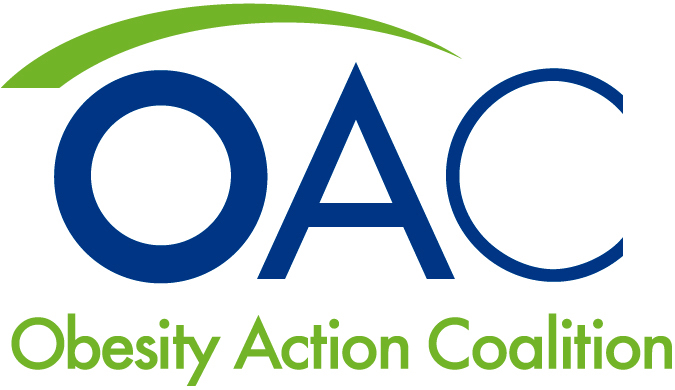

There are many racial and ethnic disparities on a national level when it comes to obesity and the factors that affect it. Looking at data from 2017, Non-Hispanic Black, Hispanic and American Indian folks have an obese classification at disproportionately higher rates than their White and Asian counterparts. Along with this, 33% of Hispanic people and 24% of Non-Hispanic Black people report to eat vegetables less than one time daily, in comparison to 15% by White and Asian folks. A healthy diet that is rich in vegetables and complex nutrients is a key factor in preventing obesity. Fitness and exercise have also been proven to reduce obesity and many of its health risks, especially heart disease. We see here that the populations with the highest rates of obesity also are more likely to engage in no leisure time activity.
Fast food restaurants continue to proliferate in the US, giving people more access to unhealthy food. While there is no absolute truth to the correlation between fast food restaurants and the obesity rates throughout the years, these restaurants do nothing to help the growing obesity crisis and can only contribute to it. Highlight a point on the chart to see the exact values.
America stands out in the world as a "melting pot" of vairous cultures, ethnicities, and races. Yet it seems no one can avoid the threat of obesity, regardless of who or where you are. In the following map, you may select between various ethnicities and age groups to see where in the US are certain groups affected most by obesity. Note that, based on denser ethnic populations in certain states, values may differ on the average obesity for said state.
Not a soul in the country has not seen the consequences and harm of obesity on a human being. People around the country work to advocate for healthier lifestyles for people of all ages. One noteworthy figure is previous First Lady Michelle Obama.
Michelle Obama is a renown spokesperson who battled the growing obesity epidemic. She is known for advocating for massive overhauls to schools and their lunches, making healthier and more affordable food options available to students around the country. She spearheaded the "Let's Move!" movement and is still involved with helping the country become a healthier place.
-Michelle Obama
A group that has been a long-time force in obesity advocacy in America is the Overview of Advocacy in Obesity (OAC). The non-profit group's goal is to educate citizens, help victims in finding treatment, and inspiring people to take up in challenging obesity in their lives.
-OAC
(Data taken from the Behavioral Risk Factor Surveillance System and the IBIS World Industry Report)